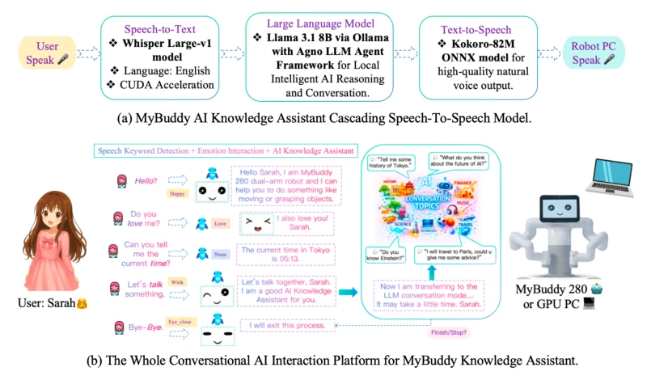
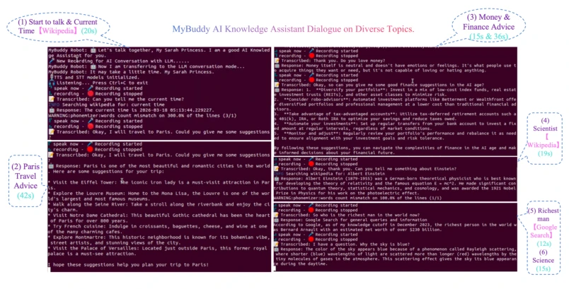

This paper equips the MyBuddy humanoid robot with a Large Language Model (LLM), attempting to transform traditional "parrot-like" dialogue into "encyclopedia-style" intelligent interaction. The intention was good, but reading it feels like forcibly plugging a 5G module into an old-fashioned radio. The highlight lies in successfully implementing the full pipeline from speech recognition to LLM inference to speech synthesis, especially introducing Google Search and Wikipedia, allowing the robot to finally answer open-ended questions like "what attractions are in Paris", instead of just reciting "hello" and "goodbye". However, the criticisms are also obvious: 20 seconds to answer "what time is it now", 42 seconds to answer "travel to Paris" latency, simply testing user patience; this is not real-time interaction, it is simply "real-time waiting". Additionally, the system strongly relies on GPU PC, questioning the feasibility of edge deployment, and emotional interaction relies only on triggering a few keywords, appearing slightly stiff. Overall, this is a "can run but not run fast" Demo, still far from true embodied intelligence, but as an entry-level application of LLM on robots, it at least proves that "Large Model + Robot" is not a gimmick.
Humanoid robots are becoming a popular platform for Human-Robot Interaction (HRI), widely used in education, healthcare, and social interaction fields. However, existing HRI systems are mostly limited by rule-based systems, predefined response templates, or closed knowledge bases, leading to robots unable to understand diverse natural language expressions, difficult to maintain context in multi-turn dialogue, and unable to flexibly respond to open queries. This rigid interaction mode seriously hinders the robot's ability to provide intelligent, adaptive knowledge assistance. Although multimodal AI paradigms have made progress in robot manipulation, traditional methods appear inadequate in natural language dialogue and knowledge retrieval. This paper aims to utilize the powerful natural language understanding, context reasoning, and knowledge retrieval capabilities of Large Language Models (LLMs) to solve the above pain points, enabling the robot to conduct continuous, multi-turn natural dialogue like humans, and provide knowledge assistance with emotional support, thereby breaking through the limitations of traditional HRI systems.
This paper proposes an LLM-based cascading Speech-to-Speech AI knowledge assistant architecture, deployed on a Raspberry Pi-driven 13-axis MyBuddy humanoid robot. The overall pipeline is divided into four core stages: First, using Silero VAD detector for voice activity detection, cooperating with Whisper-Fast model to transcribe real-time user speech into text; Second, text input to the inference module based on Agno LLM Agent framework, which calls Llama 3.1 8B model for core inference, and has tool calling capability, able to access external knowledge bases like Google Search, Wikipedia, and arXiv in real-time to obtain latest information; Third, LLM-generated text responses undergo sentiment analysis, if specific keywords (such as "hello", "love", etc.) are detected, the robot will trigger preset facial expressions (such as Happy, Wink, etc.); Finally, through Kokoro-82M TTS model convert text into natural and fluent speech output. The innovations of this architecture lie in: 1) Modular design, each component (ASR, LLM, TTS) independently optimized, improving debugging efficiency and accuracy; 2) Introducing external tool calling, achieving dynamic knowledge retrieval, rather than relying on static databases; 3) Combining emotional keyword detection with LLM reasoning, achieving seamless switching between basic emotional interaction and deep knowledge Q&A.

Figure 1: MyBuddy AI Knowledge Assistant Human-Robot Interaction System.
Experiments were conducted on the MyBuddy 280 robot, testing dialogue interactions on various topics, including weather, time, travel advice, history, finance, AI, celebrities, art, etc. Evaluation metrics mainly focus on response generation completeness, accuracy, and LLM execution time. Results show that Llama 3.1 8B model can generate reasonable answers for various topics. In terms of latency, simple questions (such as "what time is it now") require 20 seconds (including Wikipedia search), complex questions (such as "Paris travel advice") require 42 seconds, while finance or celebrity search (such as "the richest person in the world") requires only 12-36 seconds. Experiments found that GPU-driven PC can significantly improve LLM inference efficiency, superior to CPU devices. Additionally, the system can automatically switch to intelligent assistant mode based on keywords, and cooperate with facial expressions (Happy, Love, None, etc.) to enhance interaction experience. Although latency is high, it proves the feasibility of LLM in robot real-time dialogue, and the system has potential for migration to other physical platforms.

Figure 2: MyBuddy AI Knowledge Assistant dialogue experiments on diverse topics.